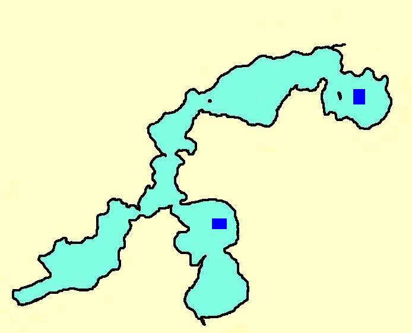
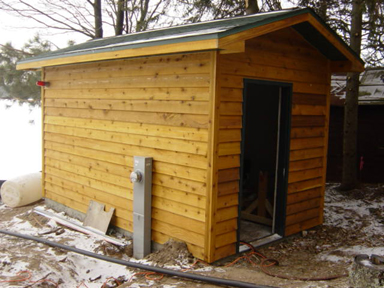
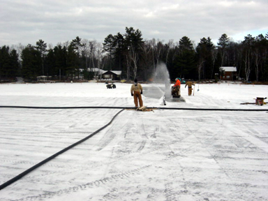
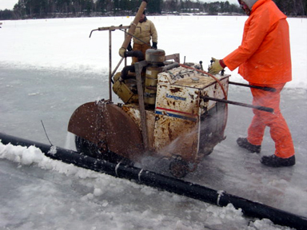
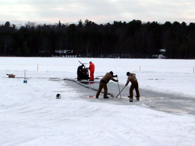
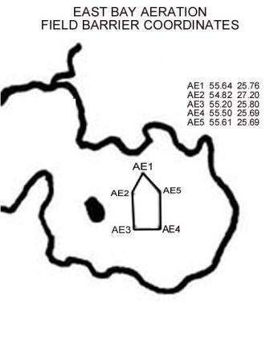
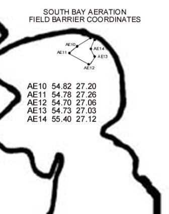

Diminishment of dissolved oxygen levels during the winter in some parts of Little Saint were contributing to fish mortality and less than optimal fish reproduction according to a study conducted by the United States Geological Survey (USGS). (Return to home page for access to the various lake studies that have been conducted). Authorization to proceed with installation of permanent winter aeration systems in two areas of East bay and one area in South bay was granted at the August 26, 2001 annual meeting (see index to minutes on home page).
Aeration systems of sufficient size to ahcieve desired improvements in water quality required large on-land compressors housed in permanent shelters and underground piping to the edge of the lake with weighted piping to carry air out to aeration fields in water depths of 15 feet or more. The following photos were taken during winter construction of the South bay system:
 
One of three systems was originally placed at the outlet of Muskellunge Creek in the hopes that oxygenated water would flow in a westward direction and provide benefit to areas of East bay. Due to the very shallow water at the creek outlet, that system proved not to be effective and has since been discontinued while consideration is given to extending the piping to an area of deeper water. It is important to note that because cold water has limited ability to absorb oxygen from the atmosphere, keeping an area free of ice does not provide the optimal oxygenation benefit of introducing air bubbles at the bottom of the lake in depths of 15 feet or more which provides the air with sufficient time to absorb into the water column before reaching the surface.
Each of the East and South bay systems maintain open water areas of approximately one acre. These areas grow and shrink in size over the course of winter with changing weather conditions and overall lake ice thickness. Maintaining a safety barrier of fence posts, roping, reflectors and warning signs as prescribed by WI Statutes is challenging and labor intensive during annual fall contruction and removal after spring ice-out. The following maps show the approximate locations of the barriers placed each winter as soon as the ice is safe enough for construction (the aerators are activated after the safety barriers are in place). Actual barrier locations may vary somewhat from these maps:
